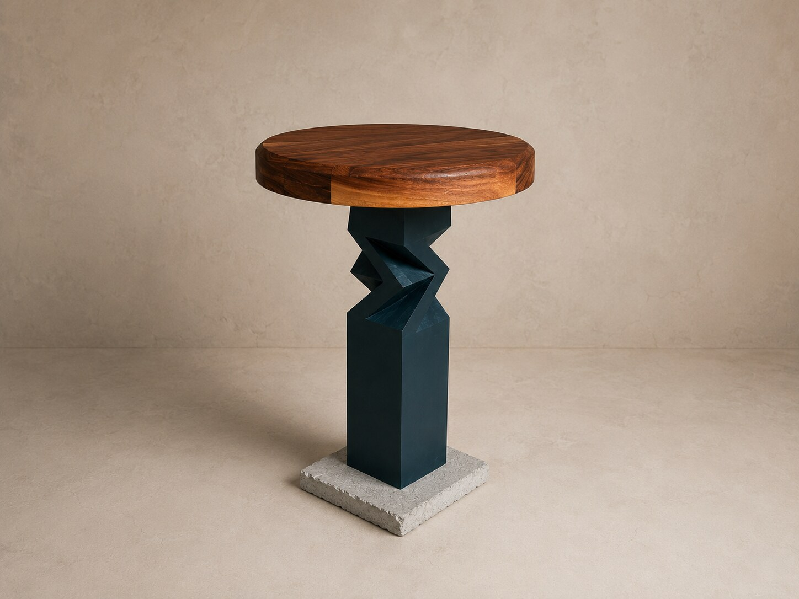

Collections
Pièces conçues et fabriquées par Still.Chaque pièce est unique et se distingue par un numéro de série individuel.
Cliquez sur le nom de chaque collection pour la découvrir.
Pièces conçues et fabriquées par Still.Chaque pièce est unique et se distingue par un numéro de série individuel.
Cliquez sur le nom de chaque collection pour la découvrir.